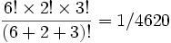

StimulusPresentationTask
User Reference
Synopsis
The main purpose of this task is to present a sequential series of auditory and/or visual stimuli to the user of the BCI system.
The StimulusPresentationTask is suited to implement evoked response (ERP) paradigms, as well as to display tasks for selective activation experiments, such as SMR screening sessions.
The sequence and nature of the stimuli can be defined by the investigator. In addition to stimulus delivery, the task can optionally be used in conjunction with BCI2000's P300 Signal Processing module (P3TemporalFilter) to provide feedback to a selected stimulus in either a copy or a free mode.
Functional Description
Stimulus Definition
Stimuli are set up through a parameter defined by the application module. This implicitly defines the total number of stimuli as well as the details of each stimulus.
Each stimulus is defined by the following properties:
- Caption
- Icon file
- Audio file
In addition to stimuli that are part of the actual stimulation sequence, the FocusOn and Result parameters contain definitions for a stimulus that indicates what to focus on, and a stimulus that presents the result. These stimuli are only used when the task is set to copy or free mode.
The following table contains an example definition of two stimuli:
| stimulus1 | stimulus2 | |
| caption | Donkey | |
| icon | images\donkey.bmp | images\elephant.bmp |
| audio | sounds\snicker.wav | sounds\trumpet.wav |
A blank entry for caption/icon/audio file is accepted, and defines that no presentation of the respective element takes place (e.g., see caption in stimulus2). The stimulus definition parameter does not contain a description on how the stimuli are presented. For further details, see the Stimuli parameter description.
Stimulus Codes
When defining a stimulus sequence, stimuli are referred to an integer ID called stimulus code. The stimulus code associated with a stimulus corresponds to the column in which that stimulus is defined in the Stimuli matrix parameter.
In the recorded data file, stimulus presentation is indicated by the StimulusCode state. During presentation of a stimulus, this state is set to the associated stimulus code.
Stimulus Sequence
Stimuli are presented in a certain sequence. This sequence can either be deterministic, i.e., defined by the investigator, or pseudo-random.
Deterministic Sequence:
The investigator defines the order by entering a list of stimulus IDs to be presented. As an example:
1 5 3 4 2
defines a sequence in which stimulus 1 is presented first, followed by stimulus 5, etc.
Random Sequence:
The investigator defines absolute stimulus frequencies for each stimulus, with the sum N of those values equaling the total number of stimulus presentations in the final sequence. The resulting random sequence is obtained by applying a random permutation to an arbitrary sequence that reproduces the given frequencies, with all N! index permutations being equally probable (Block Randomization).
As an example:
6 2 3
defines a sequence of 11 stimulus presentations with stimulus 1 being presented 6 times, stimulus 2, 2 times, and stimulus 3, 3 times. The resulting sequence S1 will be a permutation of S0 = [1,1,1,1,1,1,2,2,3,3,3], and the probability for S1 to equal S0 will be .
Multiple sequences can be generated from the given frequencies. The investigator can define how many sequences are generated and presented.
P3Speller Compatible
Sequences are random, with each stimulus being presented NumberOfSequences times, in a block-randomized fashion. When in copy mode, each entry in the ToBeCopied parameter corresponds to a NumberOfSequences-times repetition of all stimulus codes. In other InterpretModes, stimulus presentation is repeated indefinitely. This mode is intended as a compatibility mode for transitioning experiments from or to the P3SpellerTask.
Stimulus Delivery
For any stimulus, delivery occurs simultaneously for caption, icon, and audio. When both caption and icon are defined, the caption appears overlaying the icon.
An investigator can specify:
- Size and position of the target window.
- Width and height of caption and icon in percent of screen width/height, or that the icon should appear in its original pixel size.
- Whether captions, icons, or audio files will be presented (i.e., a global switch). There are no individual switches for each stimulus. However, individual captions/icons/wave files are not presented if they are not defined (i.e., their respective entries are blank).
- The volume for audio playback as a percentage of maximum volume.
- Window background color in RGB.
(For convenience, RGB values may be entered in hexadecimal notation, e.g. 0xff0000 for red.)
- Caption color in RGB.
- The duration of stimulus presentation.
(Playback of audio extending above the specified duration will be muted.)
- The duration of an inter-stimulus interval following stimulus presentation.
(During the inter-stimulus interval, the screen is blank and audio is turned off.)
- Variance in inter-stimulus intervals, with probability distributed uniformly over the interval between minimum and maximum inter-stimulus interval.
- For documentation purposes, a user can enter a comment to the specific run in a string parameter.
Processing of Classification Results
The task can be configured to interpret results communicated to it by the P3 Signal Processing module. These results represent a judgment of which of the stimuli was most likely selected. Handling of these results is identical to the P3 Spelling Task.
When it transmits a classification result, Signal Processing sets the state StimulusCodeRes to the stimulus code that was originally transmitted to it by the user application. For example, when Signal Processing sets StimulusCodeRes to 3, it transmits classification results for stimulus 3. In addition, it sets StimulusTypeRes to reflect the type of stimulus (0=non-target, 1=target) when the system is in copy mode. Signal Processing transmits the classification result as one number (i.e., the first control signal).
Free Mode
The task can be configured to operate in free mode. In this case, the sequence of stimulus deliveries is followed by a time period, in which the Signal Processing classification result is presented. The final classification result is the stimulus with the highest classification result.
In order to present this result, the system uses the stimulus defined in the result column of the stimuli parameter. This presentation is followed by delivery of the determined stimulus. In other words, after a sequence of stimulus deliveries, the system might play a .wav file that says: "the result is," followed by a .wav file that says "yes." (assuming "yes" represents the stimulus that produced the highest classification result).
Finally, the task sends this result to the operator module as an ASCII text message so that it appears in a log window.
Free mode does not terminate until the investigator suspends operation.
Copy Mode
Copy mode is similar to free mode. In copy mode, the investigator can define a list of stimuli to be copied (e.g., "3 5 4"). In this example, the user has to attend to stimulus 3 for the first sequence, 5 for the second sequence, etc.
In addition to presenting the result, the delivery of stimuli is preceded by a presentation that describes the stimulus to which the user must attend. This presentation uses the stimulus that is defined in the FocusOn parameter. This presentation is followed by delivery of the desired target stimulus. As an example, the system might say "Please focus on" ... "yes," before it starts with the sequence of stimulus deliveries.
Copy mode terminates (i.e., suspends the task) when the user has finished copying all stimuli specified by the investigator.
Parameters
WindowWidth, WindowHeight
The width and height of the subject-visible application window, in pixels.
WindowLeft, WindowTop
The screen position of the application window's top left corner, in pixels.
WindowBackgroundColor
The window's background color, given as an RGB value. For convenience, RGB values may be entered in hexadecimal notation, e.g. 0xff0000 for red.
PreRunDuration
The duration of the pause preceding the first sequence. Given in sample blocks, or in time units when immediately followed with 's', 'ms', or similar.
PostRunDuration
Duration of the pause following last sequence. Given in sample blocks, or in time units when immediately followed with 's', 'ms', or similar.
PreSequenceDuration
Duration of the pause preceding sequences (or sets of intensifications). Given in sample blocks, or in time units when immediately followed with 's', 'ms', or similar.
In free or copy mode, the PreSequenceDuration and PostSequenceDuration parameters may not go below twice the value of the StimulusDuration parameters, in order to allow for presentation of FocusOn and Result announcement stimuli.
PostSequenceDuration
Duration of the pause following sequences (or sets of intensifications). Given in sample blocks, or in time units when immediately followed with 's', 'ms', or similar.
When used in conjunction with the P3TemporalFilter, this value needs to be larger than the EpochLength parameter. This allows classification to complete before the next sequence of stimuli is presented.
StimulusDuration
For visual stimuli, the duration of stimulus presentation. For auditory stimuli, the maximum duration, i.e. playback of audio extending above the specified duration will be muted. Given in sample blocks, or in time units when immediately followed with 's', 'ms', or similar.
ISIMinDuration, ISIMaxDuration
Minimum and maximum duration of the inter-stimulus interval. During the inter-stimulus interval, the screen is blank, and audio is muted.
Actual inter-stimulus intervals vary randomly between minimum and maximum value, with uniform probability for all intermediate values. Given in sample blocks, or in time units when immediately followed with 's', 'ms', or similar. Note that temporal resolution is limited to a single sample block.
InterpretMode
An enumerated value selecting on-line classification of evoked responses:
- 0: no target is announced "attended", and no classification is performed;
- 1: online or free mode: classification is performed, but no "attended target" is defined;
- 2: copy mode: "attended" targets are defined, classification is performed.
DisplayResults
Switches result display of copy/free spelling on or off. In the P3Speller, setting DisplayResults to 'off' will disable execution of all speller commands (such as switching matrices) as well.
SequenceType
Enumerated value selecting between
- 0 deterministic sequence mode: the sequence is explicitly defined in the Sequence parameter;
- 1 random sequence mode: the sequence is random, with pre-defined stimulus frequencies.
- 2 P3Speller compatible mode: the sequence is random, with each stimulus being presented exactly NumberOfSequences times, in a block-randomized fashion. In copy spelling mode, one such sequence is presented for each entry in the ToBeCopied parameter. In other InterpretModes, such sequences are repeated indefinitely; the current run must be stopped manually.
Sequence
In deterministic mode, a list of stimulus codes defining the sequence of presentations. In random mode, a list of integer stimulus frequencies. In P3Speller compatible mode, this parameter is ignored.
NumberOfSequences
The number of sequence repetitions in a run (a run corresponds to a single data file).
ToBeCopied
A list of stimulus codes defining a sequence of attended stimuli. At the beginning of each presentation sequence, another entry from this list is announced as the attended stimulus (see FocusOn).
This parameter is only used in copy mode.
UserComment
An arbitrary string intended for documentation purposes.
Stimuli
A matrix defining the properties of stimuli to be presented. Columns of the Stimuli matrix correspond to individual stimuli and their stimulus codes. For each stimulus, the following properties are defined by its row entries:
- Caption: a text string, with its size and color depending on the CaptionHeight and CaptionColor parameters;
- Icon: a graphic file (Windows BMP), with its size depending on the StimulusWidth parameter;
- Audio: an audio file (Windows WAV), with playback starting at the onset of the visual stimuli.
A blank entry for caption/icon/audio is accepted, and defines that no presentation of the respective element takes place.
Additionally, a number of global stimulus parameters may be overridden with specific values for individual stimuli. To do this, for each parameter to be individualized, add an additional row to the Stimuli matrix. The row label indicates the parameter to be changed, and has to be one of:
- StimulusDuration,
- ISIMinDuration, ISIMaxDuration,
- StimulusWidth, CaptionHeight, CaptionColor, AudioVolume.
Whenever one of these rows is present, the corresponding global parameter will be ignored.
FocusOn
In copy mode (see InterpretMode), the attended stimulus is presented prior to the stimulus sequence (PreSequenceTime), preceded with a special announcement stimulus. This stimulus' properties are defined by the FocusOn parameter, which is a matrix in the same format as the Stimuli parameter. Usually, this matrix has a single column; when multiple columns are present, all stimuli are presented concurrently. To control the duration of the "FocusOn" announcement and the attended stimulus independently of the global StimulusDuration parameter, a StimulusDuration column may be present in the FocusOn matrix.
Result
In copy and free modes (see InterpretMode), the classification result is presented following the sequence (PostSequenceTime). Presentation of the predicted stimulus is preceded with an announcement stimulus. This stimulus' properties are defined by the Result parameter, which is a matrix in the same format as the Stimuli and FocusOn parameters. As for the "FocusOn" parameter, to control the duration of the "Result" announcement and the predicted stimulus independently of the global StimulusDuration parameter, a StimulusDuration column may be present in the Result matrix.
StimulusWidth
For icon stimuli, stimulus width in percent of screen width. Stimulus height is deduced from the stimulus' aspect ratio, which is always conserved. If this parameter is zero, all stimuli will be displayed unscaled, i.e. at their original pixel size. This parameter's value may be overridden by an additional row in the Stimuli, FocusOn, and Result matrices.
CaptionHeight
For text stimuli, the height of the stimulus' caption in percent of screen height. This parameter's value may be overridden by an additional row in the Stimuli, FocusOn, and Result matrices.
CaptionColor
For text stimuli, the color of the stimulus' caption, given as an RGB value. This parameter's value may be overridden by an additional row in the Stimuli, FocusOn, and Result matrices.
BackgroundColor
The background color of the stimulus rectangle, given as an RGB value. The height of the rectangle is defined by the CaptionHeight parameter, and its width depends on the caption's text width.
CaptionSwitch
A boolean parameter to globally switch presentation of stimulus captions on or off. To present captions for individual stimuli only, remove captions for other stimuli from the Stimuli matrix.
IconSwitch
A boolean parameter to globally switch presentation of icon stimuli on or off. To present icons for individual stimuli only, leave icon entries for other stimuli blank in the Stimuli matrix.
AudioSwitch
A boolean parameter to globally switch presentation of audio stimuli on or off. To present audio for individual stimuli only, remove audio entries for other stimuli from the Stimuli matrix.
AudioVolume
The volume for audio playback, in percent of maximum volume. This parameter's value may be overridden by an additional row in the Stimuli, FocusOn, and Result matrices.
States
StimulusTime
A 16-bit time stamp in the same format as the SourceTime state. This time stamp is set immediately after the application module has updated the stimulus/feedback display.
StimulusCode
The numerical ID of the stimulus being presented (16 bit).
StimulusType
This state is 1 during presentation of an attended stimulus, and 0 otherwise. The notion of an "attended" stimulus requires data recording in copy mode.
StimulusBegin
This state is 1 during the first block of stimulus presentation, and 0 otherwise.
PhaseInSequence
This state is 1 during pre-sequence, 2 during sequence and 3 during post-sequence (see Timeline).
PauseApplication
While this state is set to 1, no task processing occurs, i.e. the task is paused, and may be resumed by setting PauseApplication to 0.
SelectedStimulus
When classification is performed, this state contains the stimulus code of the stimulus classified as the "selected" one.
Timeline
See also
User Reference:P3TemporalFilter, User Reference:P3SpellerTask, Programming Reference:StimulusTask Class
![[BCI2000 Help]](../../images/bci2000logo_small.png)
{kind=link}